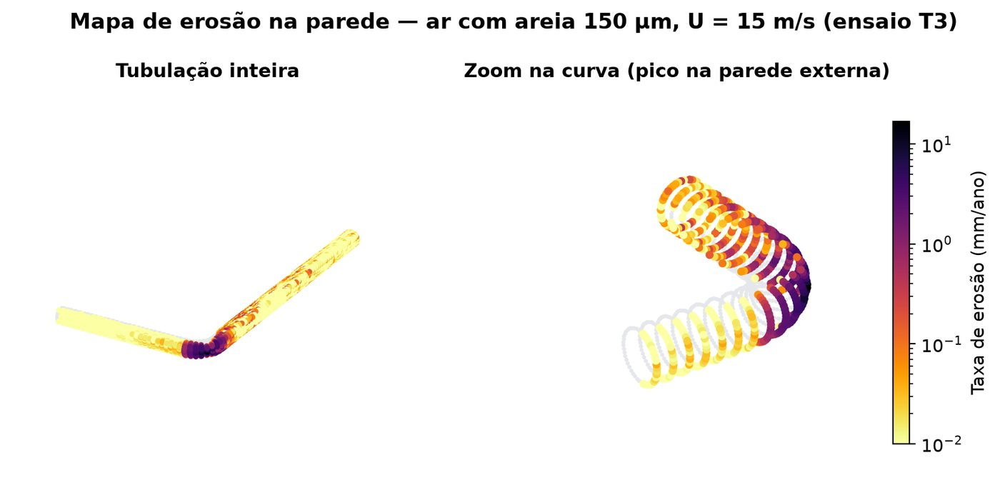

CFD industrial · PINNeAPPle-CFD
Simulação de escoamento, desgaste e corrosão
CFD de verdade (OpenFOAM) para prever onde e quando uma peça vai desgastar, curva, trecho reto, trocador, com a sua própria geometria enviada diretamente na plataforma e um modelo substituto treinado por cima para responder cenários em segundos.
validado contra ensaio publicado, dentro do fator 2